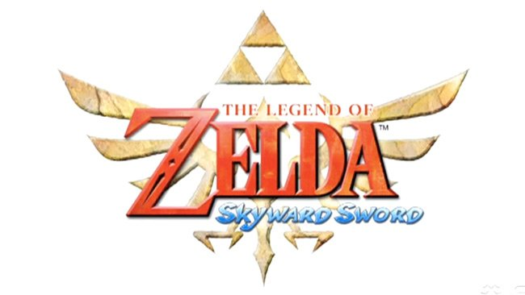
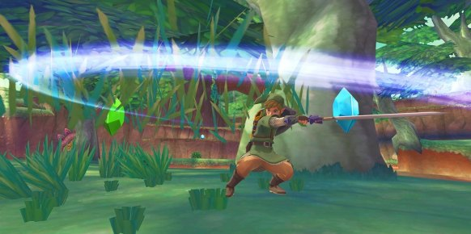
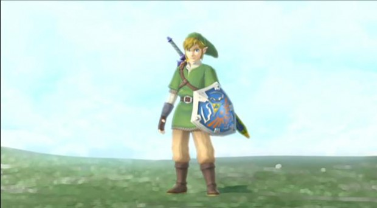

The Legend of Zelda: Skyward Sword es un juego de acción-aventura para la videoconsola Wii. Actualmente se encuentra en desarrollo por Nintendo Entertainment Analysis and Development, y está previsto su lanzamiento el 18 de noviembre de 2011 en Europa y 20 de noviembre de 2011 en América. El juego utilizará de forma obligatoria el periférico Wii MotionPlus. Se venderá junto a un Wii Remote Plus dorado o de forma independiente, y ambas incluirán un CD con canciones orquestadas de la franquicia.
Nintendo reveló, vía comunicado de prensa, nuevos detalles de la esperada nueva entrega en la serie de The Legend of Zelda: Skyward Sword, que será lanzado para Wii el próximo 18 de noviembre en Europa y 20 de noviembre en Estados Unidos. También revelo que habría 2 ediciones:

Algunas características filtradas sobre el juego: